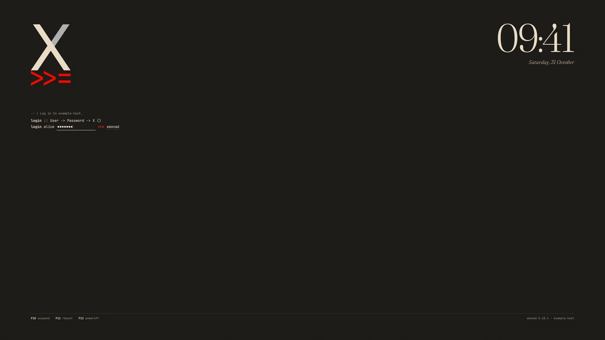
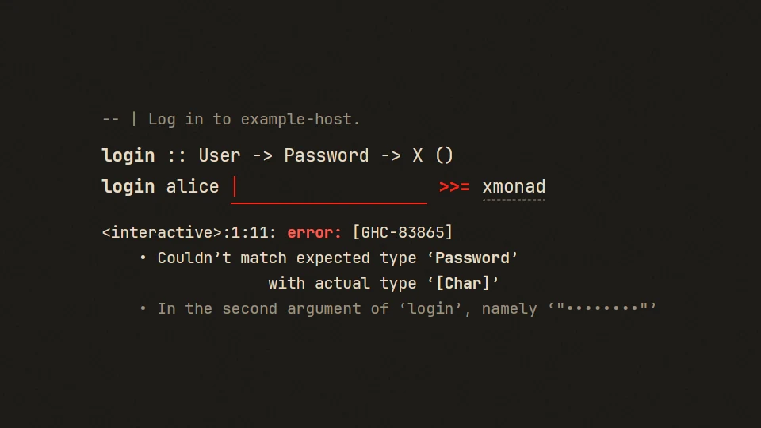
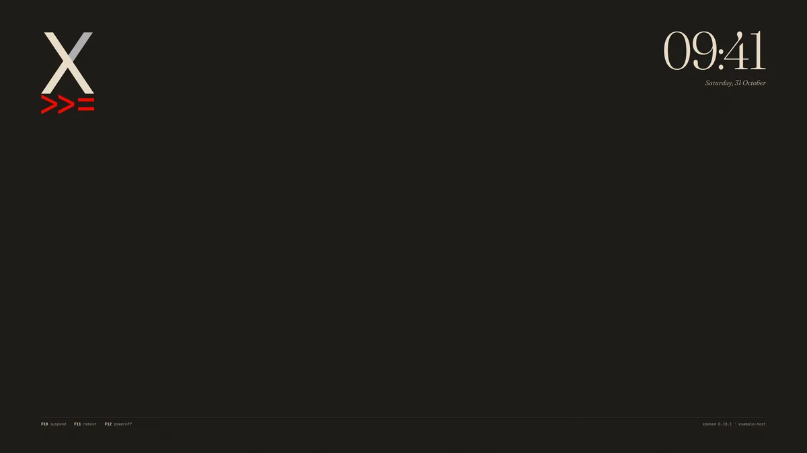
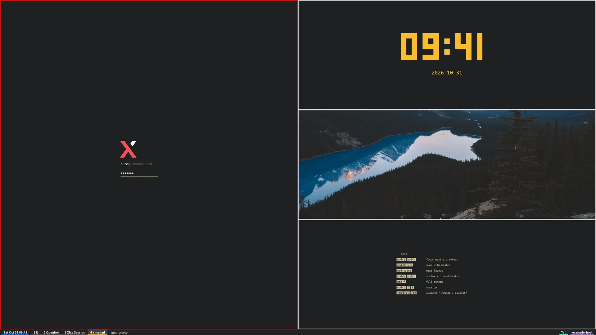
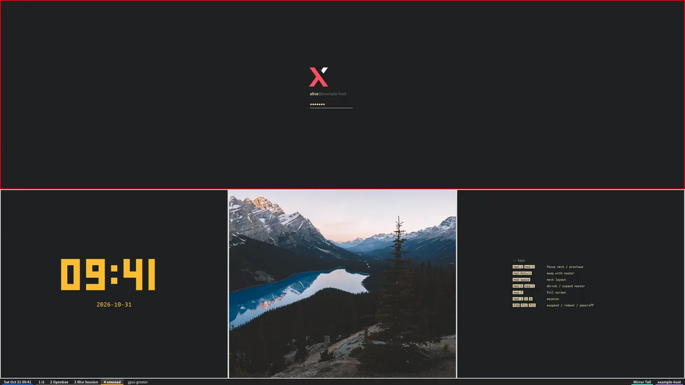
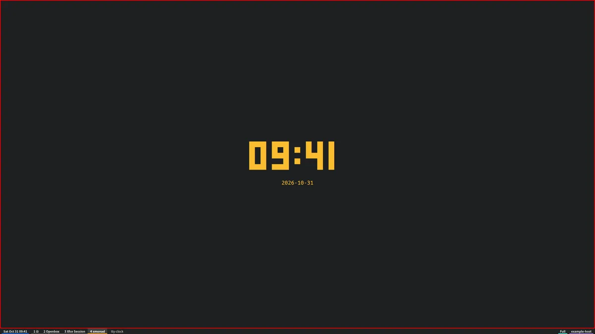
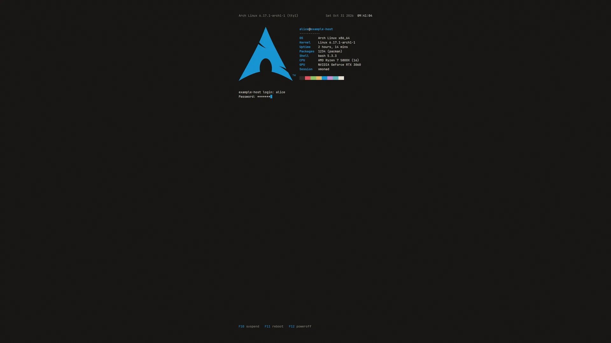
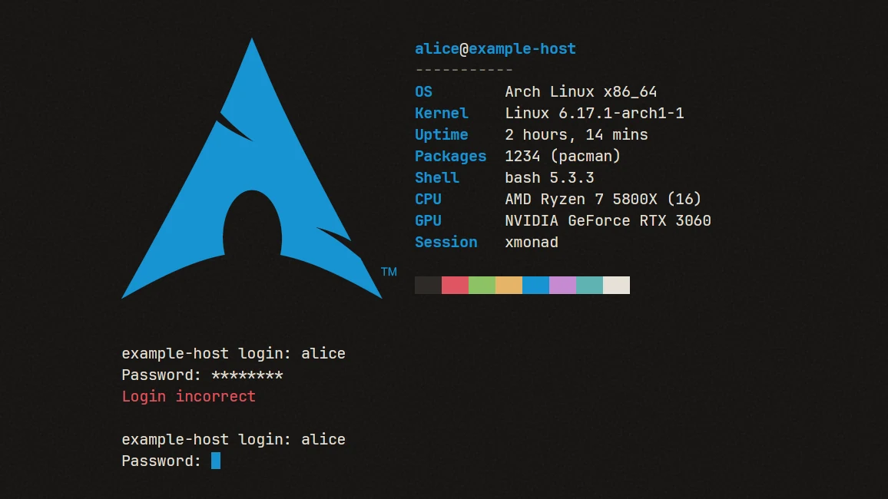
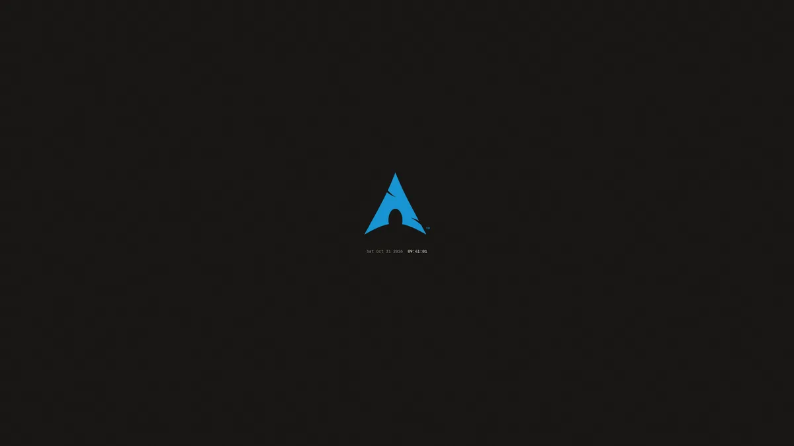

gpui-greeter 1.0
A login screen and lock screen for X11
gpui-greeter is a greeter for greetd, with a lock screen and a settings window, built with GPUI and gpui-kit.
Why I wrote this
I wrote gpui-greeter for fun. Tiling window managers such as xmonad don't come with a display manager of their own, and LightDM, SDDM and GDM all look dated to me, so I made a modern-looking login screen for greetd, and a lock screen to go with it, with gpui-kit. That's all it is.
Themes
Built-in looks and theme folders
Frost and Neon come with gpui-greeter, as does Paper further down. XMonad Bind, XMonad Tall and Arch Linux Console are theme folders I made for my own machine with the theme skill in the package. They draw the xmonad and Arch Linux logos, so they stay on my machine and are not part of gpui-greeter; they are here to show what a theme folder can do.
Frost, built in
Modelled on macOS's lock screen
At rest Frost shows your wallpaper, sharp, with a large clock and the date. A key or a click blurs and dims it in 300 milliseconds behind a round avatar, the name and a password field, set low on the screen as macOS sets them, above Sleep, Restart and Shut Down.
Its sizes were measured from Apple's own pictures of Sonoma's and Sequoia's lock screen and login window: the field, the avatar, the name, the round password dots and how close they sit, and the three small swings of a refused password.
- 160×28
- points, the password field, as macOS draws it
- 72
- points across, the avatar
- 13
- points, the text, and 15 the name
- 300 ms
- from the clock to the form, easing out
XMonad Bind, a theme folder
A login written as Haskell
xmonad's classic logo on a dark page, a large clock at the top right, and the login as a line of Haskell: login :: User -> Password -> X (), then login alice ••••••• >>= xmonad. The red >>= logs in, as Return does, and Tab changes the session after it.
A wrong password gets GHC's type error back, and on the lock screen the line reads unlock.

>=, at the top left of a dark page, and the clock 09:41 with the date at the top right; under the logo, login :: User -> Password -> X (), then login alice with seven typed dots, >>= and xmonad; F10 suspend, F11 reboot and F12 poweroff along the bottom">

XMonad Tall, a theme folder
The login, tiled by xmonad
The login tiled as xmonad's Tall layout tiles windows, in xmonad's and polybar's default colours: the form is the master pane, and tty-clock, a feh slideshow and a list of keys are stacked beside it, with polybar along the bottom.
xmonad's own keys work: mod-j and mod-k move the red border, mod-Return swaps a pane into the master, and mod-space cycles Tall, Mirror Tall and Full. polybar's workspaces are the sessions, and at rest tty-clock fills the screen.



Arch Linux Console, a theme folder
Arch's login on tty1
The issue line with the date and the time, a fetch block beside the Arch logo, and the login: and Password: prompts with a block cursor. A wrong password prints Login incorrect as getty does, and the lock screen speaks as vlock.
The fetch block's facts are read from the machine's own files: the system, the kernel, the uptime, the packages, the shell, the CPU and the graphics card. The machine in these screenshots is made up.



Neon, built in
A terminal at night
Neon sets your machine's name over a terminal panel with corner brackets, scanlines and a slow scan beam, on a drawn city at night, a circuit board with light running along its traces, a synthwave sunset over a moving grid floor, or a faint grid.
A status line goes READY, AUTH, then GRANTED or DENIED, the name glitches on a refusal, and F-keys along the bottom pick the session, the keyboard layout and the power actions.


Theme folders
Design your own, or ask an agent to
A theme is a folder: a theme.toml of layers on a 3840 by 2160 frame, with the pictures, SVGs and fonts they draw. Layers keep to the screen's edges and centre, change with each state of the login, move by keyframes, and fill in the time, the user, the session, what PAM says and facts about the machine, read from files. A theme never runs anything.
This is inspired by Omarchy, where a theme is a folder on your own machine that restyles the whole desktop, and Omarchy ships skills that help your coding agent make new ones. Here the package comes with a skill for designing login screens with an agent; the three theme folders above were made with it.
Dial, the example in the package, is a clock in a ring of sixty ticks, one of them lit and moving with the seconds.


Design one with Claude Code
mkdir -p ~/.claude/skills
ln -s /usr/share/gpui-greeter/skills/gpui-greeter-theme \
~/.claude/skills/Then ask it for a new login screen. The skill walks the agent through it with you: the idea, fonts and pictures gathered lawfully, macOS's sizes, a preview of every state in both languages, and the install. Your themes stay on your machine.
Check, preview, install
gpui-greeter check-theme DIR
gpui-greeter preview DIR --state error --shot error.png
sudo gpui-greeter install-theme DIR --selectcheck-theme names every problem by file and line, and a theme that fails it is never drawn: the greeter shows Paper instead. preview --shot draws it in any state, in an X server of its own, with no display.
Paper, built in
A clock on warm paper
Paper is the look the greeter starts with. It sets a large Fraunces clock above your avatar, the name and an underlined password field, with the session at the bottom left and Sleep, Restart and Shut down at the bottom right. The paper is a sheet on a wooden desk among a pencil, a fountain pen, a cup of coffee and a succulent, all drawn at your monitor's size.
Or ledger paper, a drafting sheet whose title block holds the session and the power actions, or plain paper; Paper Night lays each on a walnut desk or a dark ground, and every one takes an accent.


Switching
F9 to the next look
At the login screen and the lock screen, F9 shows the next look at once and Shift+F9 the one before: the built-in looks, then the theme folders you have installed. The greeter starts with the one you picked next time, until the settings name another.
Tab and F2 pick the session, F10 to F12 sleep, restart and shut down after a second press, and Esc clears the field or goes back to rest.
Lock screen
The same looks while you are away
gpui-greeter lock covers every monitor of a running X session in your look, under greetd or any other display manager. It rests with its clock while you are away; the first key only wakes it, and once your password is accepted every window is as you left it.
A small supervisor holds the keyboard, the pointer and a black cover and checks the password with PAM, while a second process draws the look: should that one crash, the cover stays and the session never shows.


From a key
bindsym $mod+Shift+x exec --no-startup-id gpui-greeter lockThat is i3's; any window manager's key bindings, or sxhkd, run the same command.
When the screen blanks
gpui-greeter lock --when-idle 30 &From ~/.xinitrc: it locks once the screen saver has kept the screen blank for 30 seconds, so whoever wakes the screen finds the lock at rest, and at once on loginctl lock-session.
Settings
A window for the everyday settings
gpui-greeter settings opens a window for the look to start with, each look's background and accent, Frost's wallpapers or Bing's picture of the day, your avatar, the size and the language. It shows the look as the greeter draws it, small, as you change it.
Nothing changes until Apply. Your avatar goes to AccountsService; what root keeps goes through one narrow helper under pkexec, which takes only the settings the window offers and checks them all first.


Details
Monitors, sizes and languages
- Native density
- The looks are laid out in points, as a Mac lays out a display, from each monitor's own pixels per inch: about as large on a 27-inch 4K monitor as on a 24-inch 1080p one, and as large as macOS's lock screen.
scalemakes them larger or denser. - Every monitor
- Each monitor gets a window of its own, and the form shows on the primary one and follows the pointer to another. Nothing is tied to a monitor, a port or a mode.
- Refresh rate
- Each window draws at its own monitor's refresh rate, 240 Hz included, and follows it as monitors sleep, wake and change modes. Nothing is drawn while another VT is in front.
- No waiting
- The session starts the moment PAM accepts the password, with no welcome to wait through. It runs through
startx, as tuigreet starts it, so your own~/.xinitrcapplies. - Quiet
- No look tells you how to log in or how to wake the screen. The line under the field says nothing until there is something to say.
- English and 中文
language = "zh-CN"puts every look, the lock screen and the settings window in Chinese.


Install
One command on Arch, a module on NixOS
gpui-greeter runs on X11, as the login screen of greetd. It needs a Vulkan driver, an X server with startx, PAM and systemd.
Arch Linux
paru -S gpui-greeterFrom the AUR. To build what is on main instead, run makepkg -si in a clone's packaging/arch.
NixOS
imports = [ gpui-greeter.nixosModules.default ];
services.gpui-greeter.enable = true;Add the flake github:crazyboycjr/gpui-greeter to your inputs, and the module sets up greetd with the greeter, its lock screen's PAM service and its settings.
Then switch to greetd
sudo gpui-greeter-switch greetdgreetd becomes the display manager from the next boot, and sudo gpui-greeter-switch lightdm goes back; nothing starts or stops before then. Run one display manager at a time: starting greetd beside another's session can end that session. The session greetd starts lives on VT 1, so Ctrl+Alt+F1 returns to it, and stopping or restarting greetd ends it.
The install guide has what the package installs, the switch done at once, and what to do when something goes wrong.
Built with
Rust and GPUI
gpui-greeter is written in Rust on GPUI, the GPU UI framework made for the Zed editor, through gpui-kit, and it draws with Vulkan. These are the pieces it stands on.